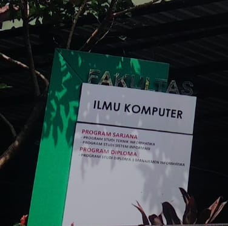

Sistem Peminatan Fakultas Ilmu Komputer Universitas Pembangunan Nasional Veteran Jakarta.
Selamat Datang pada Sistem Peminatan Keahlian Fakultas Ilmu Komputer UPN Veteran Jakarta
Sistem ini untuk sebagai tolak ukur pemahaman diri saya terhadap materi pemrograman web sistem informasi.
